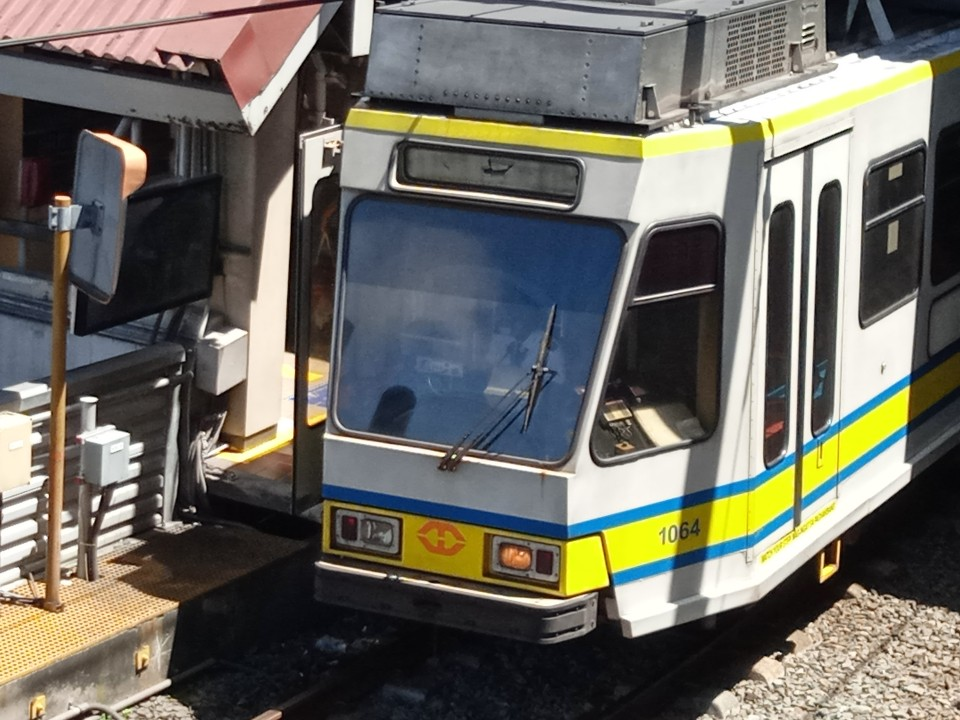
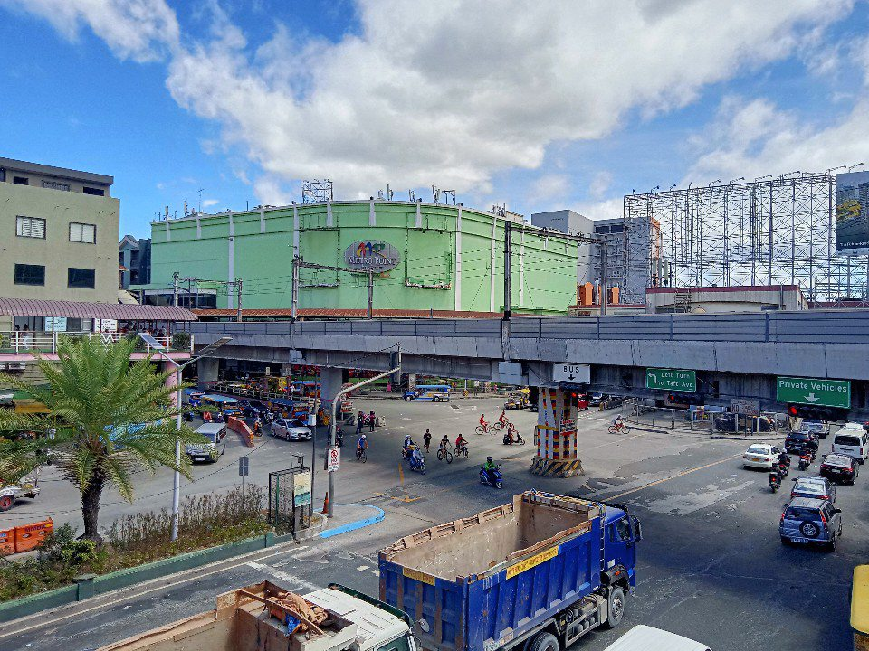

About Justin LRT
 Hello there! My name is Justin and I am a famous and well-known student of Pasay City West High School, a photographer, song composer and rail enthusiast. I'm always ride LRT-1 because I'm enjoying ride LRT of cool air conditioning, fast speeds and safe.
Hello there! My name is Justin and I am a famous and well-known student of Pasay City West High School, a photographer, song composer and rail enthusiast. I'm always ride LRT-1 because I'm enjoying ride LRT of cool air conditioning, fast speeds and safe.
Educational background
I attended P. Villanueva Elementary School from kindergarten to Grade 6. Learning was challenging, but I still enjoyed the many gatherings and parties.In 2020, I enrolled in Grade 7 at Pasay City West High School. Due to the pandemic, learning was difficult. Without AI or assistants, I had to complete printed modules on my own. Some modules were challenging to fill out due to difficult questions. Unfortunately, I received low grades in this educational system.
In August 2022, I was excited to return to in-person classes. I adapted well to the new environment, earned higher grades, and learned more effectively.
Currently, I'm a Grade 11 student pursuing the ABM (Accountancy, Business, Management) strand. I aspire to become an accountant so I can build and manage my own business.
As a student of Pasay City West High School

In every time to go to school, I'm so happy because I can meet all of my friends and to doing vlogging as well.
I'm study harder to pass. It's not easy to study because you meed to focus what are the activities are coming. Failure is a success, meaning if you failed in the test or you got low grades the coming quarters will be increase the grades and scores. I am one of the honor student in my school.
Click here to see about my school.
Photographer
|  | |
 |
 |
 |
|
Some of his photos captured somewhere
I'm always taking pictures somewhere because it's so beautiful and I've taken someone at the school.
I've start photographing in 2021 because of beautiful view outside at top of my house. When the face-to-face classes starts after 2 years, I'm now able to get pictures and videos anywhere.
As of 2024, I took many photos in many places in Luzon.
Click here for more photos of my photographies.
I've start photographing in 2021 because of beautiful view outside at top of my house. When the face-to-face classes starts after 2 years, I'm now able to get pictures and videos anywhere.
As of 2024, I took many photos in many places in Luzon.
Click here for more photos of my photographies.
Song composer

The most popular song ever I created, Light Rail Transit Line 1.
In 2017, I composed a song titled
20 Stations of LRT-1by using a rail map and drawing inspiration from
12 Days of Christmas.
On March 28, 2019, I performed
20 Stations of LRT-1for the first time at a closing party in Welcome Plaza, Pasay City. The song gained some popularity until 2022.
In 2023, I decided to discontinue
20 Stations of LRT-1because I realized it was a plagiarism and too long.
I created a new song titled
Light Rail Transit Line 1based on my experiences riding the train for over a year. The song was released in February 2024 and has garnered over 64,000 views.
My largest concert was on April 4, 2024, during the Junior Prom. Students enjoyed hearing and singing
Light Rail Transit Line 1for the first time.
Finally, the song
Light Rail Transit Line 1was the top 1 Philippine's railway song in 2024.
I continue to compose new songs for everyone in the Philippines and in the world.
View my songs here.
Rail enthusiast
As a rail enthusiast, I'm always taking pictures and videos mostly in LRT-1 and rarely in LRT-2 and MRT-3, because this my part for growing my content and make money. In every school class, I'm always staying at EDSA–Taft Pasay Rotonda for trainspotting and I'm always ride LRT-1 from Libertad to EDSA.My hobby for being railfan was decreased in 2024 due to my new location that I never go and ride LRT-1 after school.
Trainspotting

Trainspotting at Pasay Rotonda on November 10, 2022.
Then, I want to train spot until 2022. My first long trainspotting at same place on November 5, 2022.
In November 9, 2022, I'm able to go to school only myself so my plan is to do trainspotting in the next day.
My first trainspotting on November 10, 2023 was successful.
In the next following days, I'm now able to stay at EDSA–Taft Pasay Rotonda for trainspotting and staying anywhere.
Hundreds of train spotted since my first trainspotting activities until today. And I'm the most rail enthusiast to upload video per day of trainspotting.
Click here for more information about my LRT-1 trainspotting.
Rides

His first ride from Baclaran to Libertad after years on December 15, 2022.
My first ride after 4 years on November 17, 2022. I'm was so excited to ride the train because I've never ride train after 4 years. I start ride from Libertad and my destination is EDSA.
My first ride from Baclaran to Libertad was on December 15, 2022. I looked the station after years and it was so large. As of 2024, I am able to ride to Doroteo Jose for long journey.
I had been ridden more than 250 times of LRT-1 since 2022.
Click here for more information about my LRT-1 ride.
Vlogger
I'm doing vlogging anywhere to gain more views. The reason why I'm doing vlogging is because to make my followers, subscribers, and viewers more interact to me.I've started to vlog when I was doing trainspotting at Pasay Rotonda, train ride, and also when there is chaos, unexpected events, dances, programs, presentations, and more at school and anywhere.
Some of my vlogging that I already did:
-
LRT-1 trainspotting
- Pasay Rotonda
- Libertad
-
LRT-1 rides
- Libertad to EDSA
- EDSA to Libertad
- Libertad to Baclaran
- Baclaran to Libertad
- Libertad to Baclaran to EDSA
- EDSA to Carriedo
- Libertad to Carriedo
- Doroteo Jose to Libertad
- Doroteo Jose to EDSA
-
LRT-2 rides
- Recto to Cubao
- MRT-3 rides
- Taft Avenue to Shaw Boulevard
- Taft Avenue to Cubao
- Cubao to Taft Avenue
- Shaw Boulevard to Ayala
- Ayala to Taft Avenue
-
Walking tours
- Pasay Rotonda
- Baclaran to EDSA
- Jeepney ride from Pasay Rotonda to Pasay City West High School
-
Pasay City West High School
- Dances
- Programs
- Earthquake drill
- Real earthquake
- Class suspension
- Random shots
- Exit gate opening
- Time lapse
- Students playing lato-lato
- Role plays
- Flag rasing ceremony
Founder of Justin LRT Media Unlimited, Inc.
Our company was operate only me, the company is not registered because we only did it inside in my school and not in nationwide service. Services are covered within in my school while media broadcasting over internet in whole Metro Manila.We provide services for students that they can reach us for help to their problems. Also, we broadcast in media to discuss about the known issues in Metro Manila.